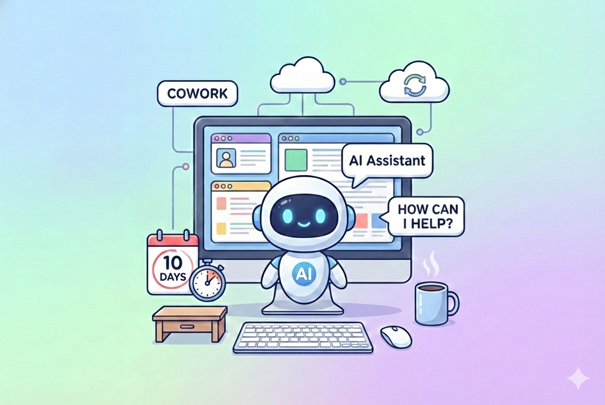

Cowork Brings AI Assistance to Your Desktop - Built by AI in 10 Days
January 15, 2026
Anthropic just released Cowork, and the meta-story might be more interesting than the product itself: the entire thing was built using Claude Code in approximately a week and a half.
Cowork allows Claude to handle more than just writing code, but building and organizing entire file structure on your Mac
Cowork is designed as a more accessible version of Claude Code, built directly into the Claude Desktop app. Instead of working in your terminal, you designate a specific folder where Claude can read or modify files. Then you give it tasks - organize your downloads, turn receipt screenshots into expense spreadsheets, produce first drafts from scattered notes - and it handles them with significantly more autonomy than a regular Claude conversation.
One review described it as "less like a back-and-forth and more like leaving messages for a coworker." You set up the task; Claude plans, and it executes without constant handholding.
There is a big catch as of right now; it's only available as a research preview for Claude Max subscribers ($100-200/month) on macOS. There's a waitlist for broader access.
But here's what I keep thinking about - Anthropic's head of Claude Code said publicly that they used Claude Code to build all of Cowork. They shipped an AI tool by having an AI tool to write most of it. In 10 days. That's not a demo or proof of concept. That's a production feature people are actually using.
Whether Cowork becomes essential or just another AI feature people try once depends on execution. But the speed at which it was built - and what built it - tells you where this is all heading. The tools are building themselves now.